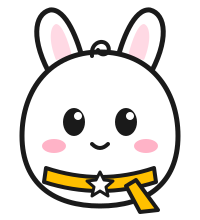

発表者の手元にだけ、ちいさな味方を。
前に立つのは、ひとり。それでも、あなたはひとりじゃない。
いっしょにがんばろう！

1スライドを読みこむ
PowerPointやFigmaからPDFで書き出したファイルを選んでください。並べ替え・非表示・自分だけのメモができます。
2応援キャラを選ぶ
背景が透明なPNGがおすすめです。選んだキャラはこのブラウザに保存されます。
3応援の準備
確認しています…
はじめる前に、Macの「システム設定 → ディスプレイ」でプロジェクターを拡張表示（ミラーリングしない）にしておきます。
スライドを読みこむと押せるようになります。